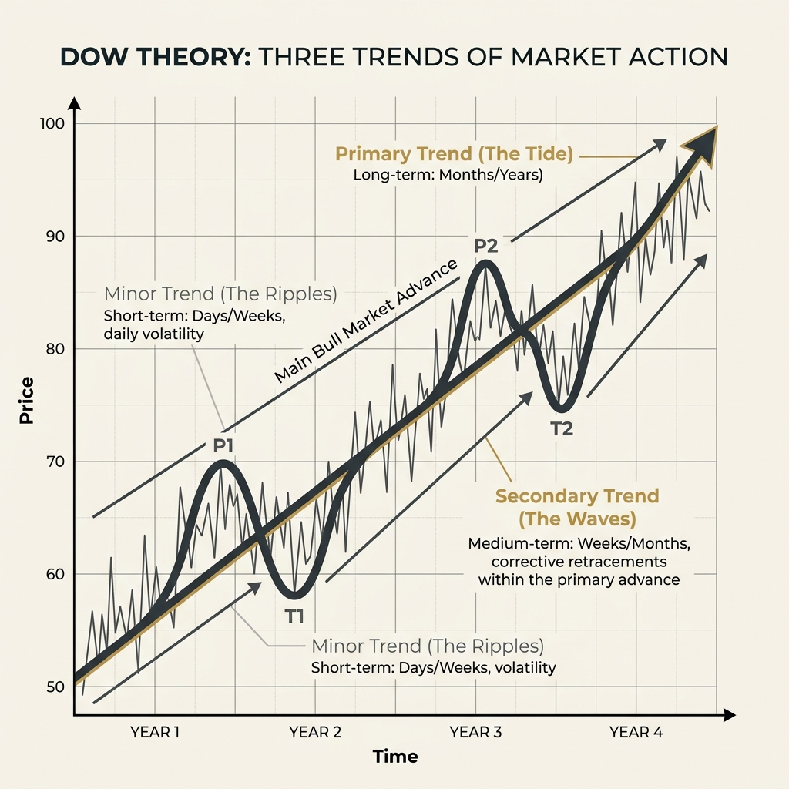
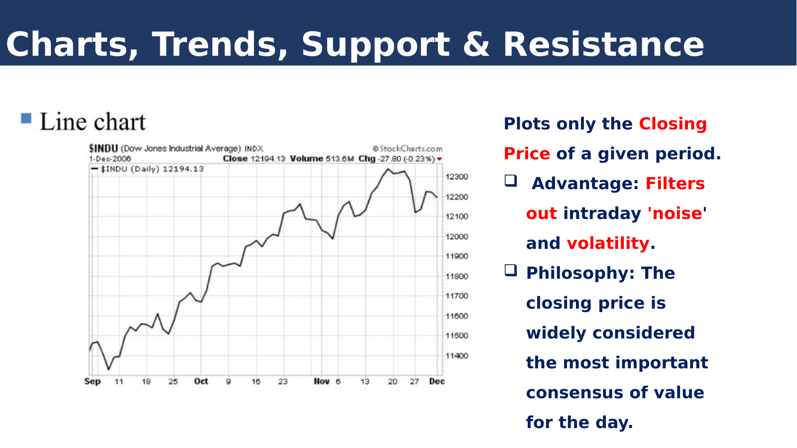
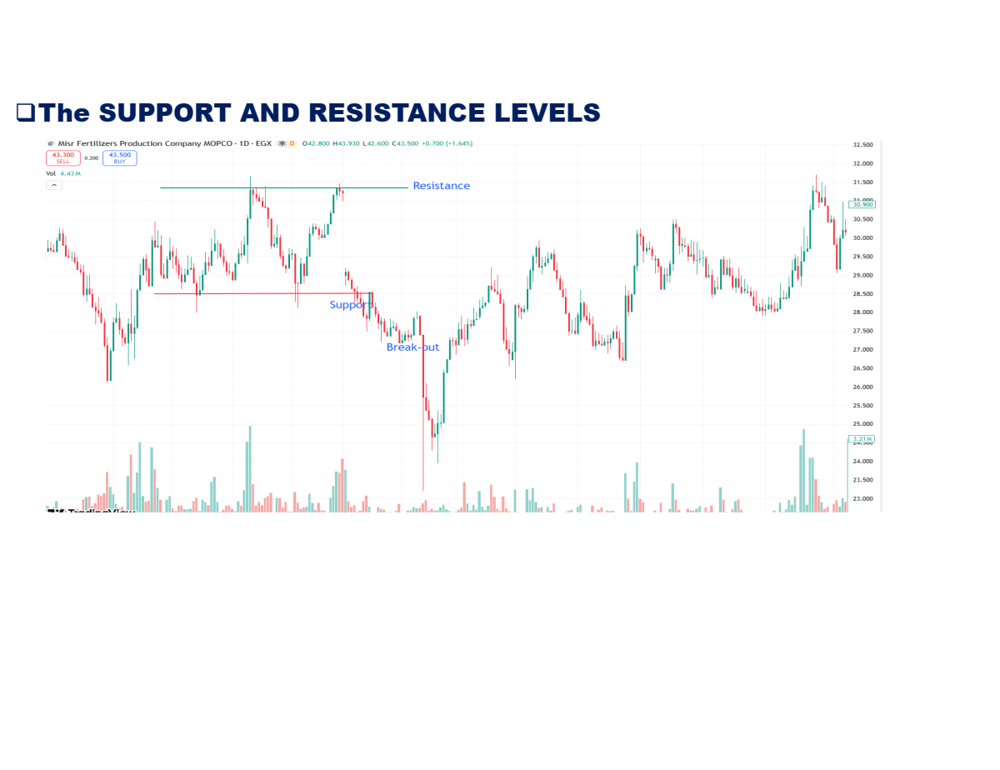

TECHNICAL
ANALYSIS
Understanding Market Movements Through Price & Volume
EMBA INVESTMENT COURSE · 2026
Press → or Space to begin
Introduction
What is Technical Analysis?
Technical Analysis is the study of past market data — primarily price and volume — to forecast future price movements.
Who Uses It?
Day Traders
Hedge Funds
Retail Investors
Algorithmic Systems
Investment Banks
The Key Distinction
TA answers WHEN to trade — timing
entries and exits.
FA answers WHAT to trade — finding undervalued assets.
The best traders use both together.
Chapter I · Origins
The Ancient Roots
Before charts existed, humans were already reading markets
~2000
BC
B
Babylonian Traders
Clay tablets from ancient Mesopotamia record commodity prices for grain, wool, and sesame over time. Merchants tracked fluctuations to time their trades — the earliest known market data analysis.
1636–37
T
Dutch Tulip Mania
The first documented speculative bubble. Tulip bulb prices rose 20× in months, then crashed 99%. The classic pattern emerged: euphoria → mania → panic → crash.
1688
V
Joseph de la Vega
Wrote “Confusion de Confusiones” — the first book describing stock exchange mechanics at the Amsterdam Exchange. Documented manipulation, speculation, and emotional price cycles.
Chapter II · The Founders
The Two Fathers of Technical Analysis
East & West · Visual tool & verbal theory
~1755 · OSAKA
Munehisa Homma
1724 — 1803 · Dojima Rice Exchange
Invented the candlestick — a visual grammar that encodes four data points (open, high, low, close) into a single glyph. Still the default chart on every trading platform, 270 years later.
“When all are bearish, there is cause for prices to rise.” — The Fountain of Gold, c. 1755

1900 · WALL STREET
Charles Dow
1851 — 1902 · WSJ · DJIA · Dow Theory
Wrote the first theory of market trends. Founded the Wall Street Journal, created the DJIA. Never wrote a book — his theory was assembled from editorials after his death. The DNA of modern TA.
“The market is a barometer, not a thermometer.” — Charles Dow, WSJ editorial
Chapter III · The Evolution
From Textbook to Artificial Intelligence
1948 – Present — Four eras that transformed TA forever
📘
1948
The Bible
Edwards & Magee's textbook — still in its 11th edition.
📊
1978
Indicators
Wilder invents RSI, ATR, ADX. MACD and Bollinger Bands follow.
🌐
1991
Candles Go West
Nison translates Homma. Online brokers open the door to millions.
🤖
2026
AI Era
70% of trading is algorithmic. ML finds patterns beyond human perception.
The Present
Why Technical Analysis Matters Today
The numbers tell the story
0
of all trading volume
is
algorithmic, most using TA signals
algorithmic, most using TA signals
0
daily forex
volume
heavily driven by technical indicators
heavily driven by technical indicators
0
retail traders
worldwide
using TA tools every day
using TA tools every day
The Journey Ahead
What We Will Cover Today
A complete journey from foundations to the future of trading
01
Introduction & History
The story of TA from ancient Babylon to AI — how we got here and why it
matters.
02
TA vs Fundamental Analysis
Core principles, key differences, and the three axioms that drive all technical
analysis.
03
Reading the Market
Chart types, candlestick patterns, trend analysis, support & resistance
levels.
04
Patterns & Indicators
Head & shoulders, double tops, RSI, MACD, Bollinger Bands, moving averages.
05
AI / DALIL Live Demo
How AI is transforming TA — with a live interactive application
demonstration.
The journey through
Technical Analysis
begins now.
Technical Analysis
begins now.
▼
Next → TA vs Fundamental Analysis & Core Principles
Block · Two
Foundations
Technical versus Fundamental Analysis — and the three principles every chart-reader stands on.
Block II · Two Schools
Two Lenses on the Same Market
Different questions, different tools, complementary answers
Fundamental Analysis
Intrinsic Value
Evaluates a security by studying financial statements, economic indicators, and industry conditions to estimate what it is really worth.
Key Question
“Is this stock undervalued or overvalued?”
Technical Analysis
Price & Volume
Studies historical price movements, volume, and chart patterns to forecast where the market is most likely to go next.
Key Question
“What will the price do next?”
Bottom line
Fundamental analysis asks WHAT to buy. Technical analysis answers WHEN to
buy. The most disciplined investors use both.
Block II · Fundamental Deep Dive
The Three Pillars of Fundamental Analysis
What value investors actually look at
Company
Financial Statements
- Income Statement
- Balance Sheet
- Cash Flow Statement
- Key ratios (P/E, ROE, Debt/Equity)
Economy
Macro Factors
- GDP growth
- Interest rates
- Inflation
- Employment & consumer data
Business
Qualitative Signals
- Management quality
- Competitive position & moat
- Industry trends
- Market share
“Price is what you pay. Value is what you get.” — Benjamin Graham, foundational work on Security Analysis
Block II · The Bedrock
The Three Core Principles of Technical Analysis
Every indicator, pattern, and strategy rests on these three ideas
Principle I
The Market Discounts Everything
Fundamentals, politics, psychology, earnings surprises — every known and even suspected factor is already embedded in the current price.
Studying price means studying the sum of all information.
Principle II
Prices Move in Trends
Markets do not wander randomly — they move in identifiable uptrends, downtrends, and sideways ranges that persist until a reversal confirms.
“A trend in motion tends to stay in motion.”
Principle III
History Repeats Itself
Human psychology — fear and greed — is constant. The same chart patterns recur because the emotions driving them never change.
Patterns work because people are consistent.
Core Assumption
If any one of these three fails, Technical Analysis collapses. All charting, all indicators, all pattern
recognition — every tool in the toolbox — inherits these three beliefs.
Block II · Side by Side
Technical vs Fundamental — The Comparison Grid
| Fundamental | Technical | |
|---|---|---|
| Focus | Intrinsic value | Price movement & trend |
| Time Horizon | Months to years | Minutes to months |
| Data | Financial statements & macro data | Charts, volume, indicators |
| Core Question | What is it worth? | Where is it headed? |
| Assumption | Markets eventually reflect value | Price already reflects everything |
| Best For | Long-term investors | Traders & timing decisions |
| Toolkit | P/E, DCF, balance sheet | Moving averages, RSI, candlesticks |
Best Practice
Use Fundamentals to decide which asset deserves a seat in
the portfolio, then use Technicals to decide when to take
that seat.
Block · Three
Reading the Market
Trends, chart types, candlesticks, and the invisible lines where supply and demand collide.
Block III · Foundations
The 3 Pillars of Forecasting
The core assumptions that make technical analysis possible
1
The Market Discounts Everything
Every known factor — fundamental, political, or psychological — is already reflected in the price. We study the effect, not the cause.
2
Price Moves in Trends
Price movements are not random. They follow trends that persist over time. An asset is more likely to continue its direction than to reverse it.
3
History Repeats Itself
Human psychology is constant. Fear and greed create identifiable patterns on charts that have reliably signaled market turns for centuries.
Block III · The Architect
Charles H. Dow
1851 – 1902
The "Father of Technical Analysis" and the man who taught the world how to read the heartbeat of the economy.
- Co-founded Dow Jones & Company (1882)
- First Editor of The Wall Street Journal
- Pioneered the use of Market Averages
Block III · The Benchmark
Measuring the Pulse: The DJIA
How Charles Dow and Edward Jones changed investment history
J
Edward Jones
The "Jones" in Dow Jones. A brilliant statistician who realized that individual stocks are noise, but an average of stocks reveals the truth of the economy.
The Partnership
While Dow was the voice (WSJ), Jones was the engine, refining the calculations that would become the world's most famous index.
A
The Industrial Average
Launched in 1896 with just 12 companies. It was the first "thermometer" for the U.S. industrial might, allowing investors to see the market as a single entity.
"The market is not a collection of stocks, but a single tide that carries all boats." — Edward Jones
Block III · Dow’s Framework
The Three Trends
Charles Dow’s ocean metaphor — the tide, the waves, and the ripples
I
Primary Trend
The TideThe long-term direction, lasting months to years. Bull market or bear market. This is what defines an era.
II
Secondary Trend
The WavesMedium-term movements against the primary trend. Corrections and retracements, lasting weeks to months.
III
Minor Trend
The RipplesDay-to-day fluctuations — noise at the surface. Short-lived and often misleading when viewed in isolation.

Dow's insight (1900)
Markets are not random. They move in identifiable, nested trends of different time scales.
Trade with the tide, surf the waves, ignore the ripples.
Block III · The Three Shapes
Trend Lines — Up, Down, Sideways
Every chart, on every timeframe, eventually settles into one of these three structures.
Uptrend
Series of higher highs and higher lows. The trendline is drawn under the rising swing lows — price respects it as a moving floor.
Downtrend
Series of lower highs and lower lows. The trendline sits above the falling swing highs — a moving ceiling.
Sideways — Trading Range
Price oscillates between a horizontal floor and ceiling. Often accumulation or distribution — the next breakout sets direction.
Read the structure first
Identify the trend before reaching for any indicator — the same RSI signal that works in a range will
fail in a strong trend.
Block III · The Tools of Sight
Three Ways to See Price Action
Line, Bar, Candlestick — each tells a different layer of the story
Line Chart
Plots only the closing price over time. Filters intraday noise — the day’s final consensus of value.
Best for: long-term trend visualization
Bar Chart (OHLC)
Encodes four points per bar: Open (left tick), High (top), Low (bottom), Close (right tick). Reveals intraday volatility.
Best for: Western-style traders
Candlestick Chart
Same OHLC data, but the body colour instantly shows who won the period — buyers (green) or sellers (red).
Best for: reading market psychology
Block III · Live Market
The Line Chart — Closing Price Only
A real DJIA snapshot showing how a line chart strips everything away except the closing-price story.

Block III · Interactive Chart
Live Market: Telecom Egypt (ETEL)
Interactive technical analysis on a real-world EGX instrument.
ETEL stock chart by TradingView
Block III · Anatomy of a Candle
The Language Japanese Rice Traders Invented
Munehisa Homma, Dojima Rice Exchange, 1700s — brought West by Steve Nison in the 1990s
Four data points, one glance
- Real body — thick rectangle between open and close
- Upper wick — thin line showing the session high
- Lower wick — thin line showing the session low
- Green/white body — close above open · buyers won
- Red/black body — close below open · sellers won
Homma realised that while supply and demand set price, the emotions of traders — fear and greed — drove the fluctuations. Legend credits him with 100 consecutive winning trades. — Dojima Rice Exchange, Osaka
Block III · Anatomy
Bullish vs Bearish Candles
A single candle compresses an entire session — who opened, who pushed, who closed.
Bullish Candle
Close above the open. Buyers controlled the period — demand outweighed supply.
Bearish Candle
Close below the open. Sellers controlled the period — supply overwhelmed demand.
Reading a candle
Body length = conviction of the winning side. Wick length = how far the
loser pushed before being rejected.
Block III · Bullish Reversals
Top 3 Bullish Reversal Examples
These signals appear at the bottom of a downtrend and suggest the "tide" is turning upward.
1. The Hammer
A small body at the top with a very long lower wick.
It shows that even though sellers tried to crash the price, buyers fought back and won the session.
Block III · Bullish Reversals
2. Bullish Engulfing
A decisive shift in control where buyers completely "swallow" the previous bearish narrative.
A small red (bearish) candle is followed by a much larger green (bullish) candle.
The body of the green candle completely covers the body of the red one. It represents the visual definition of buyers overwhelming sellers.
Block III · Bullish Reversals
3. Morning Star
The classic "rebirth" pattern — the moment of total market indecision before a new dawn.
A 3-CANDLE SETUP
Long Red → Small "Star" → Long Green.
The middle star shows that the downtrend has lost its power. Buyers and sellers are in a temporary truce before the bull run starts.
Block III · Bearish Reversals
Top 3 Bearish Reversal Examples
These appear at the peak of an up trend and suggest the market is about to drop.
1. The Hanging Man
A bearish reversal pattern at the apex of an uptrend.
Features a short lower shadow and a small real body, indicating that buyers have lost control and sellers are entering the market.
Block III · Bearish Reversals
2. Bearish Engulfing
A small green candle swallowed by a massive red candle — the definition of "panic selling".
The market's visual signature of a total rejection of the previous uptrend.
It indicates that supply has completely overwhelmed demand. The bears didn't just stop the move; they liquidated it entirely.
Block III · Bearish Reversals
3. Evening Star
The sun sets on the uptrend — the bearish twin of the Morning Star.
A 3-CANDLE SETUP
Long Green → Small "Star" → Long Red.
The final push higher fails, creating a small indecision candle at the top. The following long red candle confirms the crash.
Block III · Neutral Signals
The Doji
A state of total market equilibrium — where buyers and sellers are perfectly matched.
Forms when the opening and closing prices are the same or very close.
It signals indecision. After a long trend, it often warns of a potential reversal as momentum stalls.
Block III · The Battlefield
Support & Resistance Levels
The psychological floor and ceiling of every market.
SUPPORT (The Floor)
The price level at which demand is thought to be strong enough to prevent the price from declining further.
Logic: As price drops, it gets "cheaper" — buyers become more inclined to buy, sellers less inclined to sell.
RESISTANCE (The Ceiling)
The price level at which selling pressure is thought to be strong enough to prevent the price from rising further.
Logic: As price rises, holders want to "lock in" profits — sellers become more inclined to sell, buyers less inclined to buy.
Block III · Real-World Application
Levels in Action
Market memory: Patterns of price rejection create history that traders use to predict future moves.

Block III · Dynamic Evolution
Role Reversal Concept
The market never forgets: once a wall is broken, it becomes the new foundation.
-
Broken Resistance
→ becomes the new
Support (Strong Buy Signal) -
Broken Support
→ becomes the new
Resistance (Strong Sell Signal)
Block III · Moving Levels
Dynamic Support & Resistance
Beyond horizontal lines: some levels slope with the trend, acting as moving floors and targets.
The "Channel" Concept
When you have both Dynamic Support (floor) and Dynamic Resistance (ceiling), you have a Trading Channel.
Floor: Drawn along "Higher Lows" · Buy the Dip.
Ceiling: Drawn along "Higher Highs" · Take Profit Target.
Block III · Bearish Channels
Dynamic S/R in a Downtrend
The moving architecture of a falling market — identifying the ceiling and the target.
The Downtrend Ceiling
Drawn above "Lower Highs". It acts as a barrier where sellers reliably step back in.
The Price Target
Drawn below "Lower Lows". It helps traders find "Take Profit" opportunities on short positions.
In a downtrend, Dynamic Resistance is the dominant level. Breaking above it is the first sign of a trend reversal.
Block · Four
Patterns & Indicators
A disciplined, rules-based toolkit — four quadrants of signals that keep a trader out of analysis paralysis.
Block IV · Pattern Atlas
Classic Chart Patterns — Quick Reference
Two families every chart-reader meets across every market — reversal and continuation.
Reversal Family
Trend exhaustion → turn
- Head & Shoulders
- Inverse Head & Shoulders
- Double Top / Bottom
- Triple Top / Bottom
- Rounding Bottom (Cup)
Signals the prevailing trend is running out of fuel — a turn is forming.
Continuation Family
Pause → trend resumes
- Triangles — Asc, Desc, Symmetrical
- Flags & Pennants
- Rectangles
- Wedges — Rising, Falling
A breather inside a strong move — the prevailing trend tends to continue.
Block IV · Application
Stock Patterns
Observing classic behavior in real-time market data (EGX:DTPP).
Block IV · Trend Tracking
The Simple Moving Average (SMA)
The baseline for measuring the long-term consensus of value.
Core Mechanics
The SMA calculates the average price of an asset over a specific number of days. It smooths out the day-to-day noise to reveal the true underlying trend.
Trading Rules
- Buy Signal: Occurs when the price crosses above the SMA line.
- Sell Signal: Generated when the price drops below the SMA line.
Structural Flaws
The SMA suffers from a “whipsaw effect” in sideways markets, producing false signals and consecutive small losses.
The Lag Factor
The primary flaw of the SMA is lag, as it gives equal weight to all days (e.g., day 1 is as important as today) and reacts slowly to sudden market drops.
Block IV · Responsiveness
Exponential Moving Average (EMA) & Timeframes
Eliminating lag for faster trade execution.
Why the EMA?
The EMA solves the lag issue by placing significantly more mathematical weight on recent price movements.
EMA is highly responsive and ideal for shorter timeframes or fast-moving scalping trades.
Standard Benchmarks
- 10 to 20 Period: Highly sensitive; used for short-term entries and exits.
- 50 Period: The standard benchmark for swing traders.
- 200 Period: The ultimate boundary for determining long-term macroeconomic trends.
Block IV · Momentum Confirmation
The Missing Fuel — Volume
Moving average crossovers indicate a direction shift but do not confirm sustainability.
Institutional Momentum
Volume acts as the fuel that drives the market trend engine. A price breakout on low volume is highly likely to be a trap or a whipsaw.
On-Balance Volume (OBV)
OBV measures true buying and selling pressure by adding volume on up-days and subtracting it on down-days.
The Abort Signal
If a stock crosses a moving average but the OBV line remains flat or drops, the breakout is unconfirmed and the trade should be aborted.
Block IV · The Future
Neural Market Intelligence
The ‘Confluence Engine’ Model — transforming signals into certainty.
Σ Multi-Timeframe Ingestion
Processes SMAs (14, 28, 50, 100-day periods) alongside Momentum Stacking (RSI, Stochastic).
ƒ(x) Algorithmic Confluence
The model refuses solitary signals, weighting mathematical relationships before executing a forecast.
Δ The Sector-Sentiment Paradox
Noisy sectors (Tech/Consumer) reach peak accuracy (89.05%) when technicals are hybridized with sentiment. Quiet sectors reject sentiment as noise.
89.05%
PEAK FORECAST ACCURACY
Block IV · Framework
The 3 Pillars of Forecasting
A hierarchical approach to market prediction accuracy.
Pillar 1: The Foundation
(Technicals)
Pure technical analysis provides a highly reliable structural foundation for the model. Relies on metrics like SMA, RSI, and Stochastics.
Pillar 2: The Filter
(Context Matrix)
Algorithms must be routed properly by sector type, differentiating between Emotion-driven markets vs. Structure-driven markets.
Pillar 3: The Apex
(Psychology)
To reach the absolute apex of forecasting precision (89.05%), technical mechanics must be hybridized with real-time human psychology (Sentiment).
Block IV · Final Practice
Interactive indicator Analysis
Identify Stock futures and indicators on live market data.
COMI stock chart by TradingView
Block · Five
DALIL
Dynamic Analysis of Live Investment & Listings
A live voice-controlled Arabic interface on top of everything you have just seen — trends, candlesticks, support & resistance, RSI, Bollinger, MACD. Research in 2024 showed that combining Technical Analysis with Market Sentiment via neural networks pushed S&P 500 predictive accuracy to 86.88%, with a +1.5% uplift on two-thirds of the universe.
What follows is not a slide. It is a live demonstration.
→ Launch DALILTHANK YOU